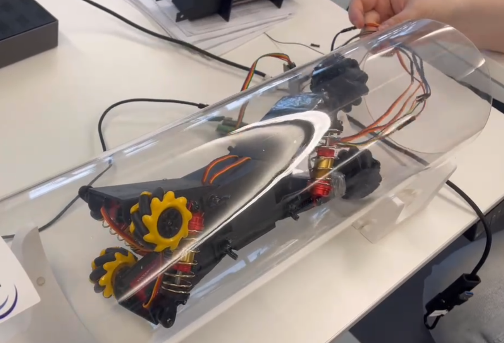
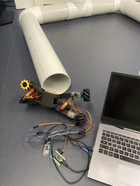
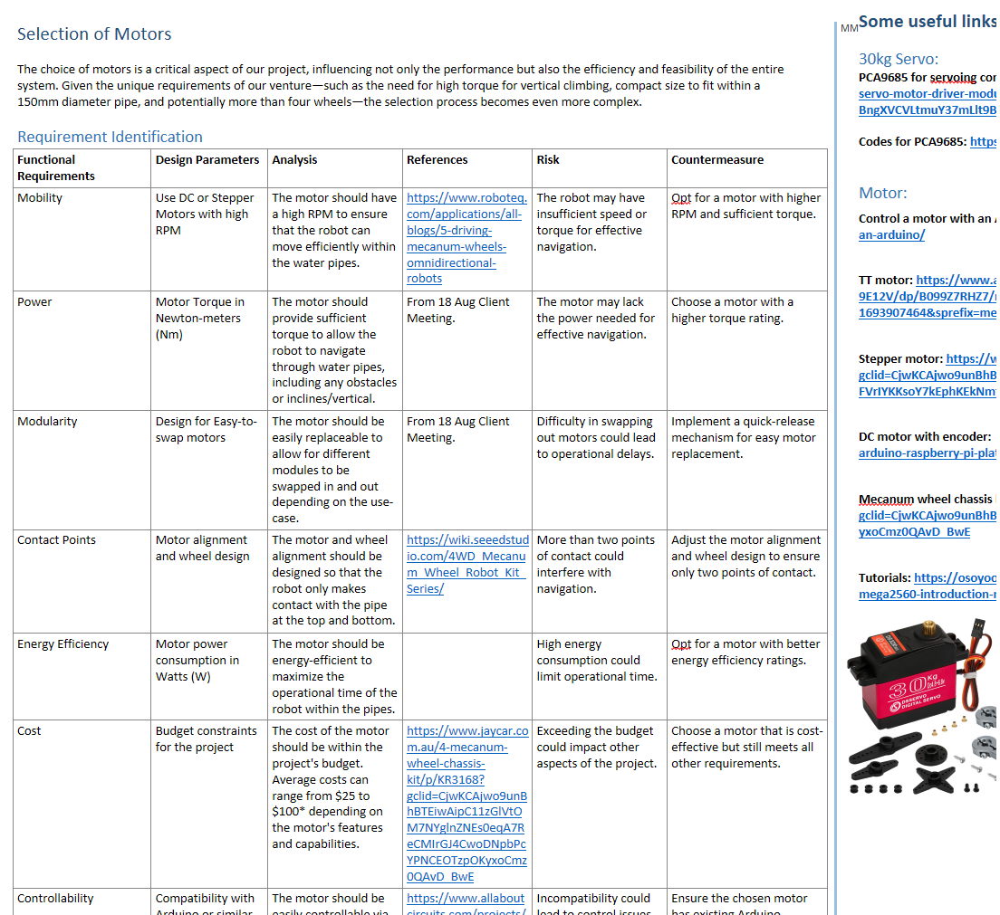
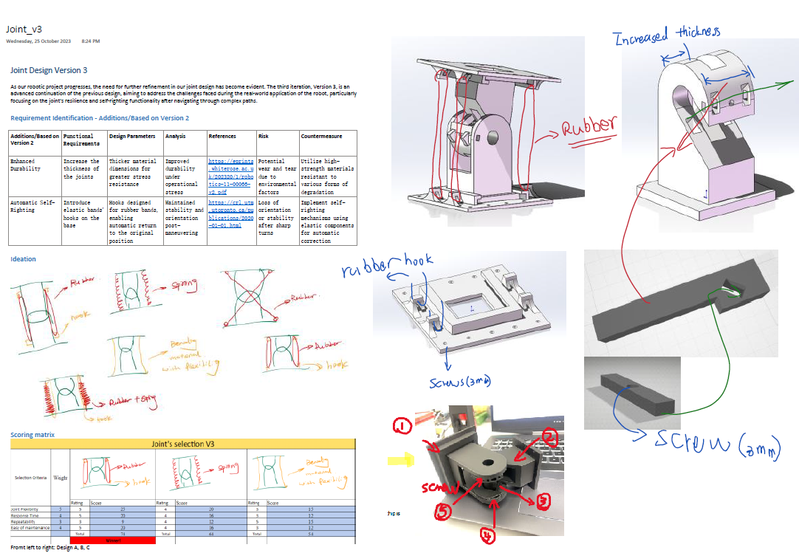
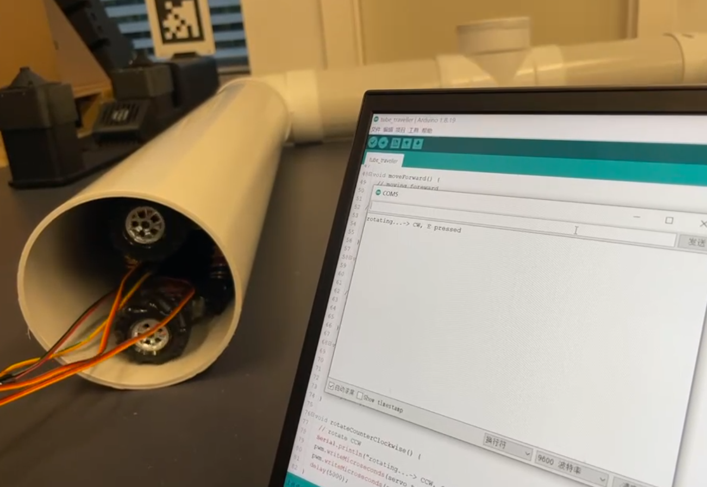

Modular Pipe Inspection Robot Drive System
An industry-sponsored modular robot prototype for inspection-oriented pipe navigation, featuring Mecanum-based drive, a redesigned inter-module joint, and compact electromechanical integration for 150 mm diameter pipe environments.

Problem
Build a compact modular robot that navigates inside 150 mm pipes, handles bends and intersections, and supports future inspection payloads.
My Role
Motor integration, embedded control, inter-module joint design, cable routing, prototype iteration, and validation testing.
Outcome
Drive-capable robot module with a redesigned joint achieving full bending motion, modular maintenance access, and stable pipe navigation.
Project Context
Developed in response to a real utility infrastructure problem: enabling robotic platforms to navigate water pipes for future inspection and maintenance. The robot had to fit within a 150 mm pipe while supporting forward/backward motion, in-place rotation, bend navigation, and eventual traversal of 4-way intersections.
The architecture uses two compact sections connected through a flexible joint. Each section integrates wheels, motors, structure, and embedded electronics within a constrained chassis.

Drive Module & Wheel Selection
After comparing candidate wheel types against criteria of mobility, size, traction, and controllability, Mecanum wheels were selected as the most balanced option. They support lateral motion, in-place turning, and smoother navigation through confined pipe sections compared to alternative concepts.
- Mecanum wheel kinematics for omnidirectional pipe movement
- Top-bottom contact maintained against pipe inner wall
- Tight spatial envelope preserved for suspension and chassis

Inter-Module Joint Design
The connection joint between the two modules needed to support bending, hold the robot securely during climbing, allow fast assembly and removal, and route cables between sections without wear or snagging.
The first iteration — a pin-based swivel — deformed under load and offered poor cable routing. I redesigned it into a hook-and-shaft mechanism with an internal cable channel, improved load geometry, and passive restoring support. The second iteration was significantly stronger and more maintainable.
Key lesson: the joint redesign shows how targeted iteration on a single subsystem can unlock the rest of the system's performance.

Motor Integration & Embedded Control
Motors were integrated with an Arduino Nano and PCA9685 PWM controller, including wiring, power routing, servo channel allocation, and speed control logic. During early testing, running all motors simultaneously caused voltage drops and intermittent response.
To resolve this, I implemented a staggered startup strategy activating motors in pairs with short delays. This stabilised voltage and gave consistent response within the system's power budget.
- PCA9685 16-channel PWM for per-motor speed control
- Staggered startup sequence to prevent inrush voltage drop
- Power budget analysis per module section

Validation in Pipe Test Rig
The prototype was tested in a transparent 150 mm pipe rig. Validation covered fit, forward/backward motion, in-pipe rotation, bend compatibility, modular installation and removal, and load-bearing stability during operation.
Pipe Fit
Validated against the 150 mm constraint with compact chassis and drive layout confirmed in situ.
Joint Performance
Revised joint achieved full bending range and supported higher loads without deformation.
System Reliability
Staggered startup and improved cable routing increased repeatability across test runs.

Key Findings & Future Direction
The strongest engineering insight was that targeted subsystem iteration — specifically on the joint — unlocked system-level performance. Small embedded changes like staggered startup had outsized impact on real hardware reliability.
Future work would extend the platform toward autonomy: adding sensing for leak detection, waterproofing for operational environments, and more sophisticated navigation through complex pipe networks. The current prototype provides a solid mechanical and control foundation.